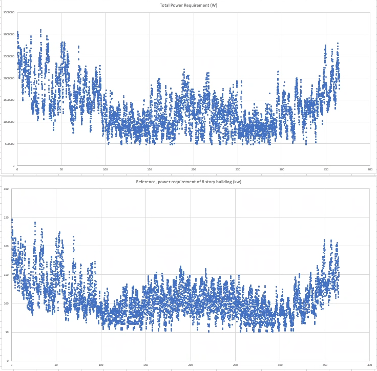
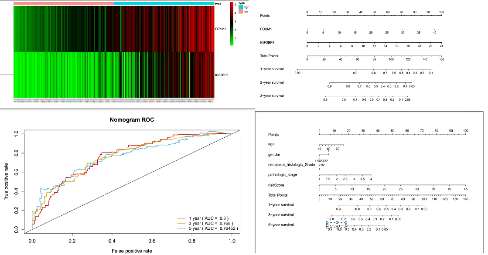

MCMC Energy Model
Cancer Model
Monkey Fish

Welcome to my website! My name is Ryan Quan, and I am a 3rd year Mechatronics Engineering student at the University of Waterloo. This website is intended to give an overview of me, showcasing my projects, achievements, and passions, as well as a bit of my personality. This website is still a work in progress, but feel free to check out one of the projects listed on this page or just take a look around!